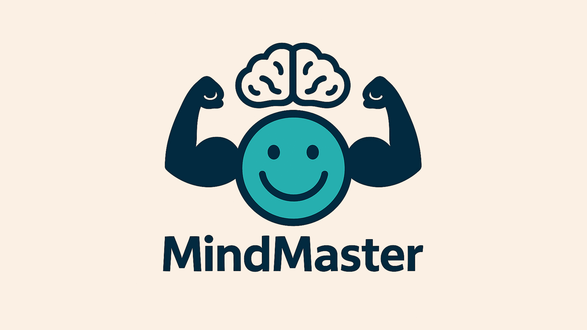

Return to the Park

Psychology is the science of how the mind works. Like biology is the science and the study of the body.
But what do we mean by that?
These questions should remind you about what we’ve learned about how the mind works.
Press any key to start.
Score: 0 (L1)
Next
Summary